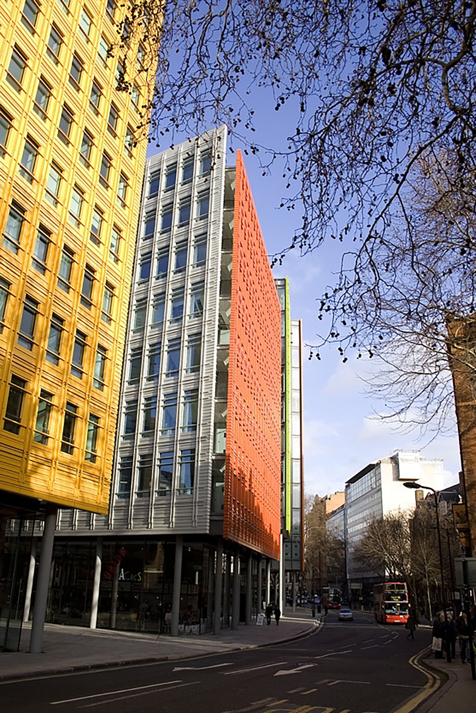

Columbia GSAPP M.S. Computational Design Practices 2024 Summer
Siqi Zhang Student Work Colloquium I
This trend might not be obvious in New York, but globally, we see examples of social media influencing urban color. Take London’s Central St Giles, which adopted trendy, vibrant facades to attract visitors. Perhaps in the future, city colors will shift from top-down decisions to more bottom-up influences. To explore this, I’ve created a tool for crowdsourcing city color designs.

In a world where color meets space and time, social media is blending our urban palette, one post at a time.